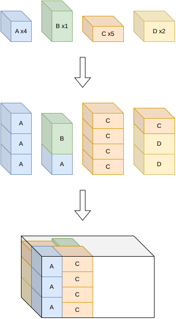

Sequential one-dimensional / rectangle¶
Objectives¶
This algorithm solves the feasibility, knapsack and open-dimension-x objectives with a single bin. With several bins, the generic algorithms (sequential single knapsack, sequential value correction) use it to solve their single-bin sub-problems.
Principle¶
It decomposes the problem in two phases:
Stacks. The items are grouped into stacks by solving a one-dimensional variable-sized bin packing problem, for each group of items which can be stacked together (same stackability id, same unloading group). Each stack is a one-dimensional bin whose length is the height of the bin, and the one-dimensional instance carries the stacking constraints: maximum weight, maximum stackability, maximum weight above, nesting heights. The stacks generated contain exactly all the items.
Footprints. The stacks, described by their footprints, are packed into the floor of the bin by solving a rectangle
knapsackproblem (anopen-dimension-xproblem for theopen-dimension-xobjective), whose profits are the profits of the stacks. The rectangle problem carries the maximum weight of the bin and its axle weight constraints.


The rectangle problem is first solved trying to pack all the stacks. If not all of them fit, it is solved again maximizing the profit.
Axle weights. When the solution violates the middle axle weight constraint of a semi-trailer truck, a stack is split in two (a light one of the last unloading group) and the two phases are repeated: smaller stacks give more freedom to distribute the weight along the bin. If the solution still violates the axle weight constraints, and some unpacked item is light enough to fit in the remaining weight capacity, the more expensive boxstacks tree search is run afterwards.
The bin is filled along x; to fill it along y, the algorithm is run on the flipped instance.
This decomposition is much cheaper than the tree search, and is designed for the instances where the axle weight constraints don’t force a sparse packing.
Automatic selection¶
It is always run for the instances with a single bin.
Source files¶
src/boxstacks/sequential_onedimensional_rectangle.hpp,src/boxstacks/sequential_onedimensional_rectangle.cpp